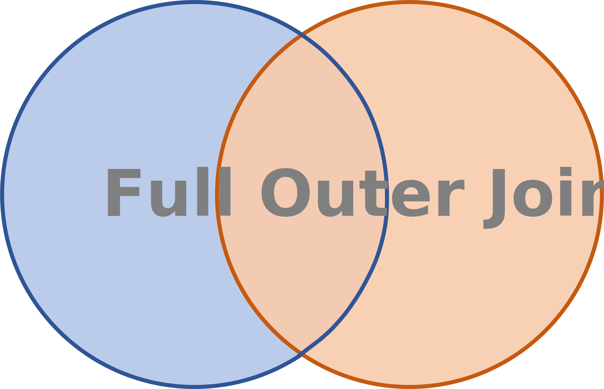
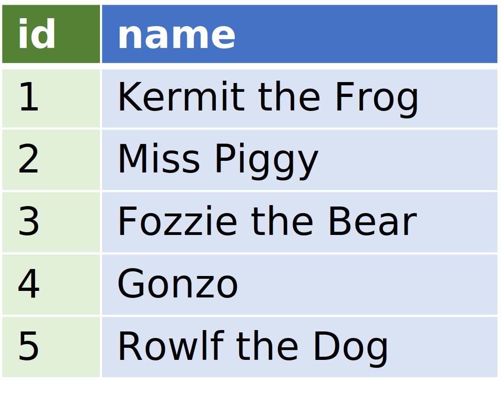
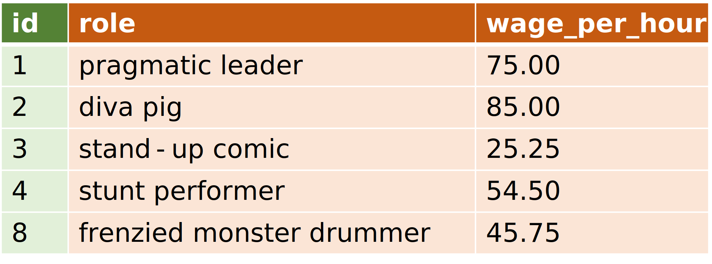
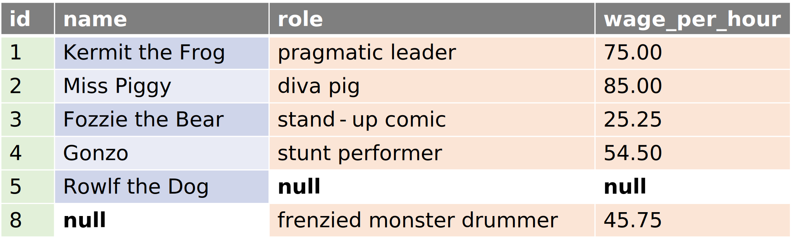

{kind=link}
{kind=link}
# A tibble: 6 × 4
muppet_id names role wage_per_hour
<dbl> <chr> <chr> <dbl>
1 1 Kermit the Frog pragmatic leader 75
2 2 Miss Piggy diva pig 85
3 3 Fozzie the Bear stand-up comic 25.2
4 4 Gonzo stunt performer 54.5
5 5 Rowlf the Dog <NA> NA
6 8 <NA> frenzied monster drummer 45.8What is a outer join?
A outer join keeps all the rows from both the right and left tables and inserts NULLs when a matching row is not found in the other table.
This Venn diagram illustrates which rows are included in a outer join.

How does a outer join work?
A outer join visits every row in the left table and then checks if there is a matching row in the right table. If there is, it combines the matching left and right row. If there is not a match, it inserts NULLs in the right columns. If there are additional primary key values in the right table that were not already inserted from the left table, it inserts those with nulls in the left table columns (since those ids were not found in the left table…only the right table).
In short, a full outer join is the unique set of rows found in both a left and right join (that’s called the intersection – not to be confused with the intersection of a left and right table. That’s an inner join!).



Notice how the last row in the left table (id=5, name="Rowlf the Dog) and the last row in the right table (id=-8, role="frenzied monster drummer", wage_per_hour=45.75) both appear in the final result with NULLs column values that came from the opposite table.
The Data School provides a nice explanation of the row by row operations for an outer join – demonstrating that an outer join is a left join combined with a right join.
How many records end up in the result of an inner join?
\(L =\) # of records in the left table
\(R =\) # of records in the right table
Min number of records \(L\) (# of records in the left table)
This is the case where all the rows in the left and right tables match.
Max number of records \(L\) + \(R\)
This is the case where there are no matching rows.
Implementing a outer join in different tools
Here is how you perform a outer join in R, Python, Power BI, and Excel.
R
Python
muppet_id names role wage_per_hour
0 1.0 Kermit the Frog pragmatic leader 75.00
1 2.0 Miss Piggy diva pig 85.00
2 3.0 Fozzie the Bear stand-up comic 25.25
3 4.0 Gonzo stunt performer 54.50
4 5.0 Rowlf the Dog NaN NaN
5 8.0 NaN frenzied monster drummer 45.75Power BI
In Power BI, we invoke Power Query through the Home >> Transform data menu item.
Excel
In native Excel, there is not a true outer join. The best we can do is mimic an outer join in two steps. First, we combine the primary key values from both the left and right tables and eliminate duplicates with the “Remove Duplicates” feature. Second, we use those unique primary key values to merge the columns together by using VLOOKUP() repeatedly.
Note
You can invoke Power Query in Excel (through the Data >> Get Data menu item) to perform a true outer join.